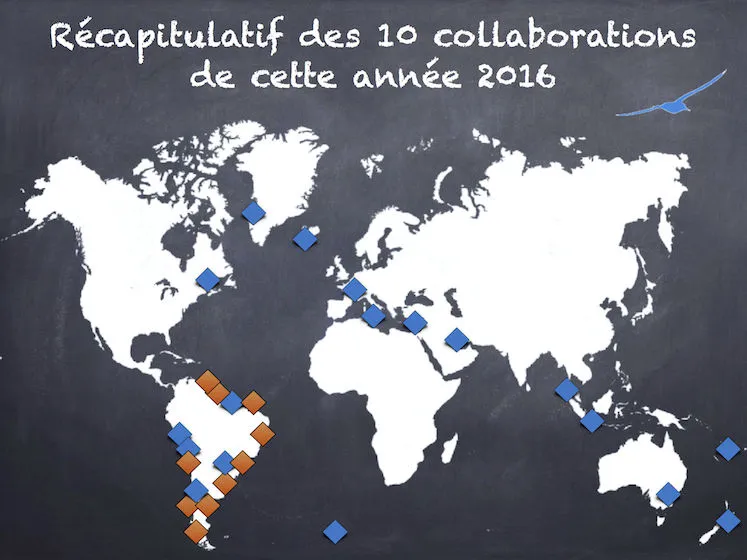

Bonne année à toutes et tous, on espère que votre année 2016 a été un immense succès, et que l'année 2017 s'annonce encore meilleure !
Ci-dessous, vous trouverez le bilan de notre année passée. Pour en savoir plus sur chacune de nos missions, n'oubliez pas de faire un tour dans nos posts précédents. Bonne lecture !
Pour télécharger le Bilan Visuel de l'An 2016, télécharger le PDF →
Pour lire le Bilan Visuel de l'Année directement en ligne, cliquez plutôt sur la page ci-dessous :